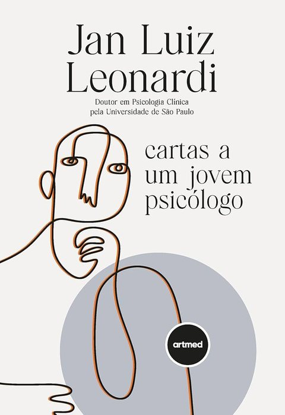
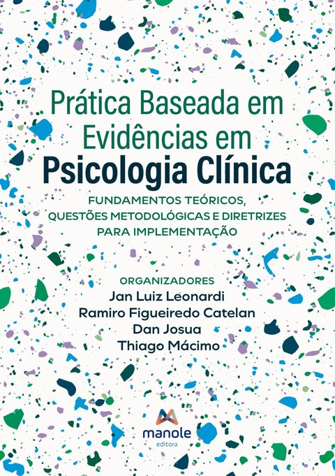
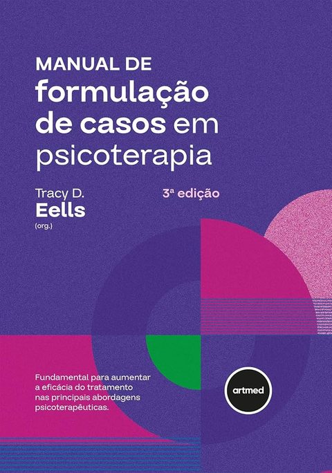
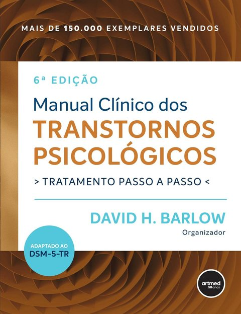
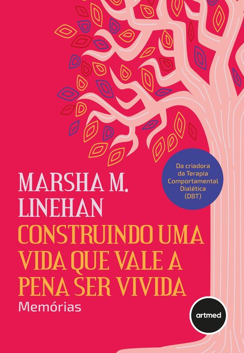

Livros 5
Os dois primeiros são os que ele indicou para quem está começando.

Cartas a um jovem psicólogo
É lindo esse livro.
Conversa com quem está começando e traz o olhar da PBE.

Prática baseada em evidências em psicologia clínica
Como reconhecer a qualidade de um estudo, decidir por um protocolo e adaptá-lo à pessoa. Ele é grande, tá? E é bem técnico, mas vale a pena dar uma lida.

Manual de formulação de casos em psicoterapia
A base do modelo de formulação que ele usa, na adaptação de Jan Leonardi.
Ver o livro →
Manual clínico dos transtornos psicológicos
Tratamento passo a passo para cada transtorno. O exemplar dele estava apoiando o computador durante a entrevista.
Ver o livro →
Construindo uma vida que vale a pena ser vivida
As memórias da criadora da Terapia Comportamental Dialética, abordagem que ele usa nos casos de borderline.
Ver o livro →Fontes de evidência 3
Onde ele busca o que funciona para cada problema.
Quem seguir 3
Igor Eckert e Léo Costa não são psicólogos, mas falam de PBE, que vale para toda a área da saúde.
SevnIA por dentro
A ferramenta de IA que ele desenvolve para apoiar a formulação de caso. Toque na imagem para ampliar.